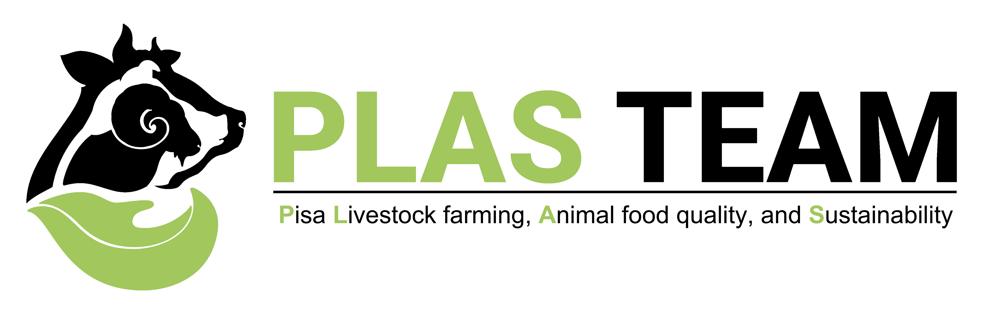
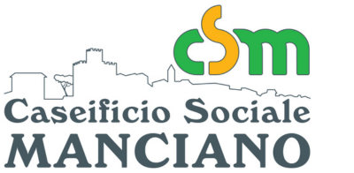

<!DOCTYPE html>
<html>
<head>
    
    <meta http-equiv="content-type" content="text/html; charset=UTF-8" />
    <script src="https://cdn.jsdelivr.net/npm/leaflet@1.9.3/dist/leaflet.js"></script>
    <script src="https://code.jquery.com/jquery-3.7.1.min.js"></script>
    <script src="https://cdn.jsdelivr.net/npm/bootstrap@5.2.2/dist/js/bootstrap.bundle.min.js"></script>
    <script src="https://cdnjs.cloudflare.com/ajax/libs/Leaflet.awesome-markers/2.0.2/leaflet.awesome-markers.js"></script>
    <link rel="stylesheet" href="https://cdn.jsdelivr.net/npm/leaflet@1.9.3/dist/leaflet.css"/>
    <link rel="stylesheet" href="https://cdn.jsdelivr.net/npm/bootstrap@5.2.2/dist/css/bootstrap.min.css"/>
    <link rel="stylesheet" href="https://netdna.bootstrapcdn.com/bootstrap/3.0.0/css/bootstrap-glyphicons.css"/>
    <link rel="stylesheet" href="https://cdn.jsdelivr.net/npm/@fortawesome/fontawesome-free@6.2.0/css/all.min.css"/>
    <link rel="stylesheet" href="https://cdnjs.cloudflare.com/ajax/libs/Leaflet.awesome-markers/2.0.2/leaflet.awesome-markers.css"/>
    <link rel="stylesheet" href="https://cdn.jsdelivr.net/gh/python-visualization/folium/folium/templates/leaflet.awesome.rotate.min.css"/>
    
            <meta name="viewport" content="width=device-width,
                initial-scale=1.0, maximum-scale=1.0, user-scalable=no" />
            <style>
                #map_bfc7198d108ca0297bdf3c2d9b855c6d {
                    position: relative;
                    width: 100.0%;
                    height: 100.0%;
                    left: 0.0%;
                    top: 0.0%;
                }
                .leaflet-container { font-size: 1rem; }
            </style>

            <style>html, body {
                width: 100%;
                height: 100%;
                margin: 0;
                padding: 0;
            }
            </style>

            <style>#map {
                position:absolute;
                top:0;
                bottom:0;
                right:0;
                left:0;
                }
            </style>

            <script>
                L_NO_TOUCH = false;
                L_DISABLE_3D = false;
            </script>

        
    <script src="https://cdn.jsdelivr.net/npm/leaflet-ant-path@1.1.2/dist/leaflet-ant-path.min.js"></script>
</head>
<body>
    
    
            <div class="folium-map" id="map_bfc7198d108ca0297bdf3c2d9b855c6d" ></div>
        
</body>
<script>
    
    
function pulseMarker(marker, minRadius, maxRadius) {
    let growing = true;
    let radius = minRadius;
    setInterval(function() {
        if(growing){
            radius += 0.3;
            if(radius >= maxRadius) growing=false;
        } else {
            radius -= 0.3;
            if(radius <= minRadius) growing=true;
        }
        marker.setRadius(radius);
    }, 30);
}
    pulseMarker(circle_marker_79a53396f4431acc96dbdce69c5be110, 8, 16);
    pulseMarker(circle_marker_52a2b3187323e5f485763ce598762c24, 8, 16);
    pulseMarker(circle_marker_bb562a9c286f66fd824f31336056e4a6, 8, 16);
    
            var map_bfc7198d108ca0297bdf3c2d9b855c6d = L.map(
                "map_bfc7198d108ca0297bdf3c2d9b855c6d",
                {
                    center: [43.0, 11.0],
                    crs: L.CRS.EPSG3857,
                    ...{
  "zoom": 7,
  "zoomControl": true,
  "preferCanvas": false,
}

                }
            );

            

        
    
            var tile_layer_a0f3fb2dbcc9da3c62101cce4ee42e17 = L.tileLayer(
                "https://{s}.basemaps.cartocdn.com/dark_all/{z}/{x}/{y}{r}.png",
                {
  "minZoom": 0,
  "maxZoom": 20,
  "maxNativeZoom": 20,
  "noWrap": false,
  "attribution": "\u0026copy; \u003ca href=\"https://www.openstreetmap.org/copyright\"\u003eOpenStreetMap\u003c/a\u003e contributors \u0026copy; \u003ca href=\"https://carto.com/attributions\"\u003eCARTO\u003c/a\u003e",
  "subdomains": "abcd",
  "detectRetina": false,
  "tms": false,
  "opacity": 1,
}

            );
        
    
            tile_layer_a0f3fb2dbcc9da3c62101cce4ee42e17.addTo(map_bfc7198d108ca0297bdf3c2d9b855c6d);
        
    
            var circle_marker_79a53396f4431acc96dbdce69c5be110 = L.circleMarker(
                [43.715, 10.401],
                {"bubblingMouseEvents": true, "color": "cyan", "dashArray": null, "dashOffset": null, "fill": true, "fillColor": "cyan", "fillOpacity": 0.9, "fillRule": "evenodd", "lineCap": "round", "lineJoin": "round", "opacity": 1.0, "radius": 8, "stroke": true, "weight": 3}
            ).addTo(map_bfc7198d108ca0297bdf3c2d9b855c6d);
        
    
        var popup_1a886e30d9258642ea82acc8edac64ba = L.popup({
  "maxWidth": 200,
});

        
            
                var html_3bf5e064fb04f35f0b93ff707d91fea0 = $(`<div id="html_3bf5e064fb04f35f0b93ff707d91fea0" style="width: 100.0%; height: 100.0%;">     <div style="text-align:center;">         <h4 style="color: cyan;">PLAS_TEAM</h4>         <p style="color: white;">Researcher del progetto</p>              </div>     </div>`)[0];
                popup_1a886e30d9258642ea82acc8edac64ba.setContent(html_3bf5e064fb04f35f0b93ff707d91fea0);
            
        

        circle_marker_79a53396f4431acc96dbdce69c5be110.bindPopup(popup_1a886e30d9258642ea82acc8edac64ba)
        ;

        
    
    
            var circle_marker_52a2b3187323e5f485763ce598762c24 = L.circleMarker(
                [42.763, 11.113],
                {"bubblingMouseEvents": true, "color": "cyan", "dashArray": null, "dashOffset": null, "fill": true, "fillColor": "cyan", "fillOpacity": 0.9, "fillRule": "evenodd", "lineCap": "round", "lineJoin": "round", "opacity": 1.0, "radius": 8, "stroke": true, "weight": 3}
            ).addTo(map_bfc7198d108ca0297bdf3c2d9b855c6d);
        
    
        var popup_8f002e9a7a76eb859a37a7bfc758775e = L.popup({
  "maxWidth": 200,
});

        
            
                var html_8f5d22ee4136883642b2e5ebce313235 = $(`<div id="html_8f5d22ee4136883642b2e5ebce313235" style="width: 100.0%; height: 100.0%;">     <div style="text-align:center;">         <h4 style="color: cyan;">Consorzio Pecorino Toscano DOP</h4>         <p style="color: white;">Consorzio di valorizzazione</p>              </div>     </div>`)[0];
                popup_8f002e9a7a76eb859a37a7bfc758775e.setContent(html_8f5d22ee4136883642b2e5ebce313235);
            
        

        circle_marker_52a2b3187323e5f485763ce598762c24.bindPopup(popup_8f002e9a7a76eb859a37a7bfc758775e)
        ;

        
    
    
            var circle_marker_bb562a9c286f66fd824f31336056e4a6 = L.circleMarker(
                [42.534, 11.504],
                {"bubblingMouseEvents": true, "color": "cyan", "dashArray": null, "dashOffset": null, "fill": true, "fillColor": "cyan", "fillOpacity": 0.9, "fillRule": "evenodd", "lineCap": "round", "lineJoin": "round", "opacity": 1.0, "radius": 8, "stroke": true, "weight": 3}
            ).addTo(map_bfc7198d108ca0297bdf3c2d9b855c6d);
        
    
        var popup_599b7aac5d8bc471039e30a93769abf9 = L.popup({
  "maxWidth": 200,
});

        
            
                var html_d9f277e17204e0c9b3b4aa6ce73be605 = $(`<div id="html_d9f277e17204e0c9b3b4aa6ce73be605" style="width: 100.0%; height: 100.0%;">     <div style="text-align:center;">         <h4 style="color: cyan;">Caseificio Sociale di Manciano</h4>         <p style="color: white;">Produzione casearia locale</p>              </div>     </div>`)[0];
                popup_599b7aac5d8bc471039e30a93769abf9.setContent(html_d9f277e17204e0c9b3b4aa6ce73be605);
            
        

        circle_marker_bb562a9c286f66fd824f31336056e4a6.bindPopup(popup_599b7aac5d8bc471039e30a93769abf9)
        ;

        
    
    
            ant_path_4a5ad79923312e29fb8e95a9b290cf71 = L.polyline.antPath(
              [[43.715, 10.401], [42.763, 11.113]],
              {
  "stroke": true,
  "color": "cyan",
  "weight": 3,
  "opacity": 0.8,
  "lineCap": "round",
  "lineJoin": "round",
  "dashArray": [
10,
20,
],
  "dashOffset": null,
  "fill": false,
  "fillColor": "cyan",
  "fillOpacity": 0.2,
  "fillRule": "evenodd",
  "bubblingMouseEvents": true,
  "smoothFactor": 1.0,
  "noClip": false,
  "paused": false,
  "reverse": false,
  "hardwareAcceleration": false,
  "delay": 1000,
  "pulseColor": "#FFFFFF",
}
        ).addTo(map_bfc7198d108ca0297bdf3c2d9b855c6d);
        
    
            ant_path_41a6ab3e6199e906f28914a8885c0970 = L.polyline.antPath(
              [[42.763, 11.113], [42.534, 11.504]],
              {
  "stroke": true,
  "color": "cyan",
  "weight": 3,
  "opacity": 0.8,
  "lineCap": "round",
  "lineJoin": "round",
  "dashArray": [
10,
20,
],
  "dashOffset": null,
  "fill": false,
  "fillColor": "cyan",
  "fillOpacity": 0.2,
  "fillRule": "evenodd",
  "bubblingMouseEvents": true,
  "smoothFactor": 1.0,
  "noClip": false,
  "paused": false,
  "reverse": false,
  "hardwareAcceleration": false,
  "delay": 1000,
  "pulseColor": "#FFFFFF",
}
        ).addTo(map_bfc7198d108ca0297bdf3c2d9b855c6d);
        
    
            ant_path_13685a62cfd340bee643a5cf8fb102ee = L.polyline.antPath(
              [[43.715, 10.401], [42.534, 11.504]],
              {
  "stroke": true,
  "color": "cyan",
  "weight": 3,
  "opacity": 0.8,
  "lineCap": "round",
  "lineJoin": "round",
  "dashArray": [
10,
20,
],
  "dashOffset": null,
  "fill": false,
  "fillColor": "cyan",
  "fillOpacity": 0.2,
  "fillRule": "evenodd",
  "bubblingMouseEvents": true,
  "smoothFactor": 1.0,
  "noClip": false,
  "paused": false,
  "reverse": false,
  "hardwareAcceleration": false,
  "delay": 1000,
  "pulseColor": "#FFFFFF",
}
        ).addTo(map_bfc7198d108ca0297bdf3c2d9b855c6d);
        
</script>
</html>